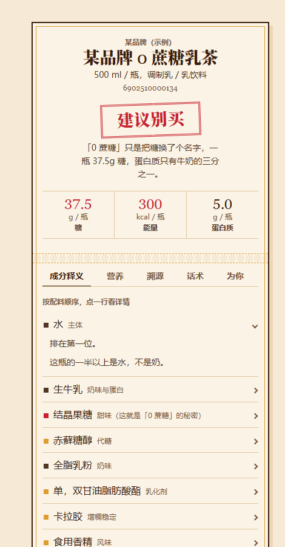

解读由 AI 生成，依据食品安全国标 GB 2760 等公开条款，仅供购买参考，不构成医疗建议。
看不懂配料表？
拍一下，三十秒讲明白
逐项大白话解释这瓶吃进去多少，按国标算「0 蔗糖」当场核一遍
没有实物？点一个示例走完流程
最近扫过

光线偏暗，条码容易识别失败。打开灯或换个位置，也可以用下面的手动方式。
把条形码对准框内，保持 15 到 25 厘米
识别不了？用手动
核对一下识别结果
识别有偏差会直接影响后面的解释，花十秒改一下更准。